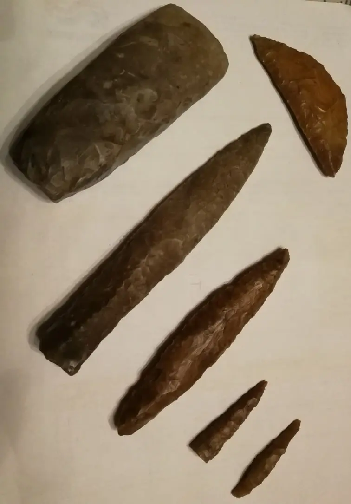

Samling af stenredskaber fundet på Falkenkær, som vidnesbyrd om at der har boet mennesker her i mange år.
Samlingen omfatter:
- Et øksehoved
- En kniv
- Et ukendt redskab
- To pile- eller spydspidser
Et yderligere redskab i øverste højre hjørne kan have været brugt til skrabning af skind.